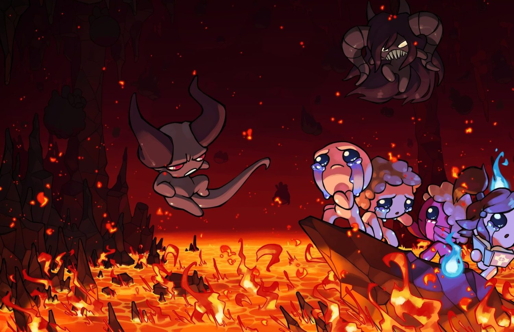

Los ítems son el núcleo del gameplay en The Binding of Isaac. Al recogerlos,
modifican de forma permanente las habilidades de Isaac o su apariencia durante la partida actual.
las habilidades que modifican los items pueden ser velocidad de movimiento, velocidad de disparo,
daño, rango, velocidad de lagrima,suerte, pactos,
planetario y en otros casos variables del juego como aparicion de objetos al terminar una sala